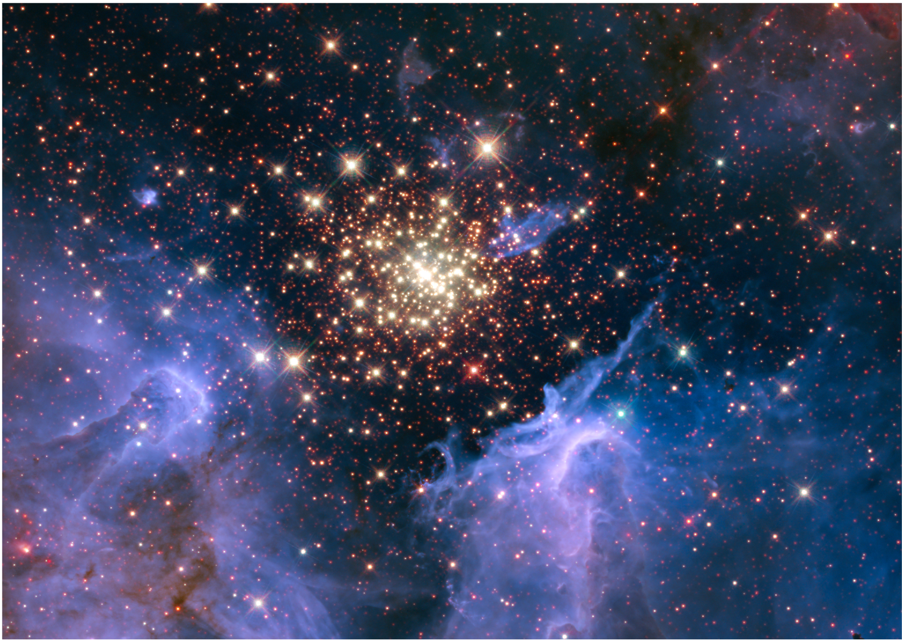

Download My PhD Chapters

Chapter 1 - Introduction
Chapter 2 - Spectral characterisation of the extinction properties of NGC 3603 using JWST NIRSpec
Chapter 3 - Determining stellar accretion rates from Paα and Brβ emission lines with JWST NIRSpec-Accretion of pre-main-sequence stars in NGC 3603
Chapter 4 - Kinematic evidence of magnetospheric accretion for Herbig Ae stars with JWST NIRSpec
Chapter 5 - Externally irradiated young stars in NGC 3603. A JWST NIRSpec catalogue of pre-main-sequence stars in a massive star formation region